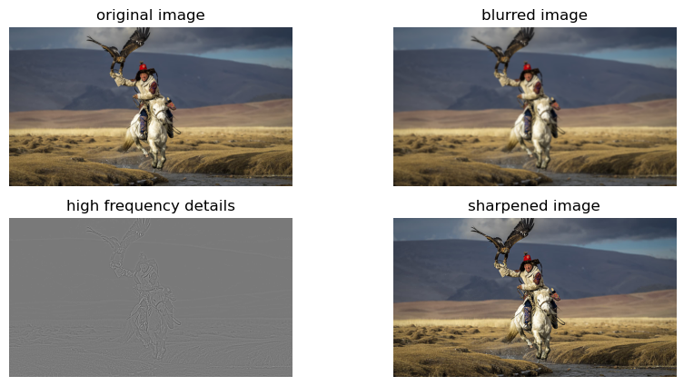
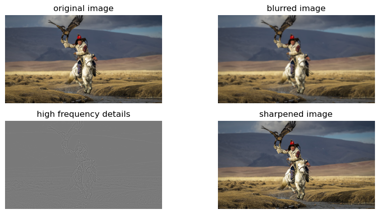

Part 1: Defining Correspondences
To compute the gradient magnitude of an image, we first calculate the partial derivatives in both the horizontal and vertical directions using finite difference kernels. Specifically, we use a kernel like [1, -1] to find differences between adjacent pixels horizontally (dx), and a kernel like [[1], [-1]] for vertical differences (dy). By convolving these kernels with the image, we obtain the gradients along each axis. The gradient magnitude at each pixel is then computed by combining these partial derivatives using the Euclidean norm: sqrt(dx² + dy²). This results in a single image where the intensity of each pixel represents the strength of the gradient at that point, effectively highlighting edges and areas with significant intensity changes.
Part 2: Computing the "Mid-way Face"
The sharpened image recovers some of the lost details from the blurred image. Edges and textures become more pronounced. Over-amplification of high-frequency components can introduce artifacts and noise, especially in areas with subtle gradients.
 

Part 3: The Morph Sequence
Part 4: The "Mean face" of a population